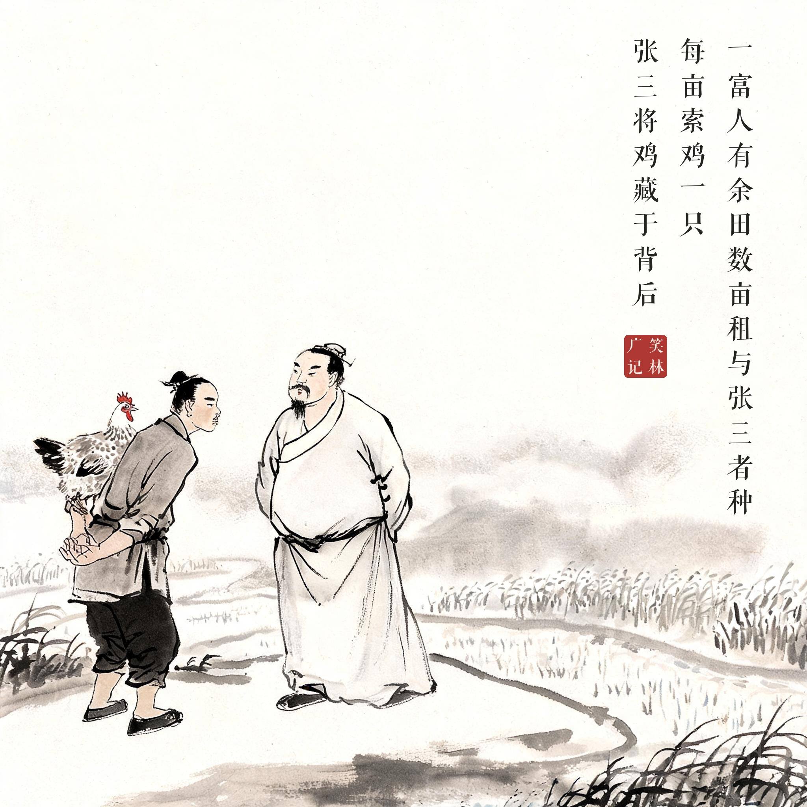
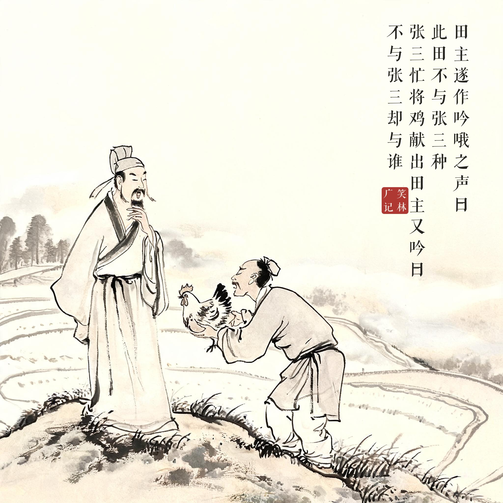
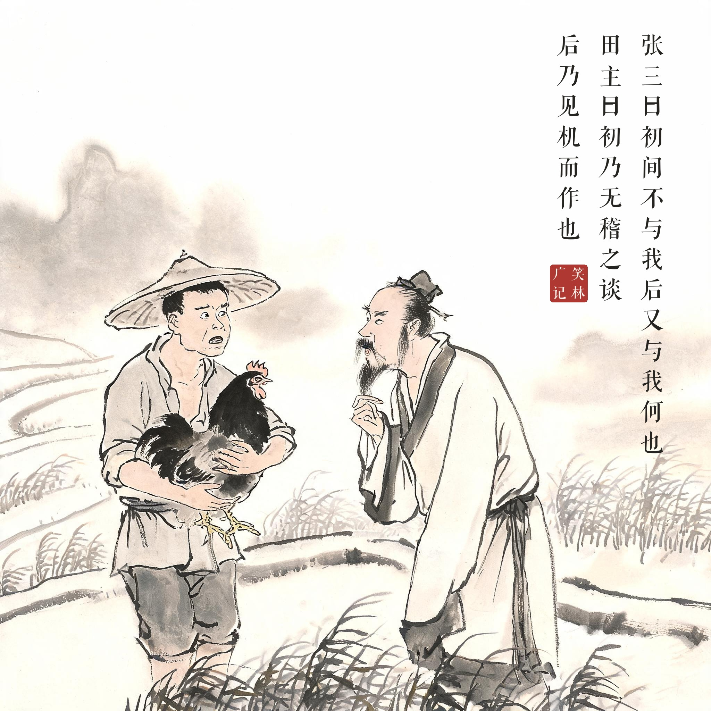

《笑林广记 · 古艳部》（[清]游戏主人纂集）
一富人有余田数亩、租与张三者种，每亩索鸡一只。张三将鸡藏于背后，田主遂作吟哦之声曰："此田不与张三种。"张三忙将鸡献出，田主又吟曰："不与张三却与谁？"张三曰："初间不与我，后又与我，何也？"田主曰："初乃无稽（鸡）之谈，后乃见机（鸡）而作也。"
富人有几亩田租给张三种，讲好每亩要一只鸡。这年张三把鸡藏在身后去见田主。田主摇头晃脑吟诗："此田不与张三种。"张三慌忙把鸡献上。田主又吟："不与张三却与谁？"张三问："刚才不给我，现在又给我，为什么？"田主捻须掉文："方才是无稽（鸡）之谈，如今是见机（鸡）而作。"
收租收出了诗意，勒索勒出了成语——两只鸡换来两联对仗，田主的才学和胃口一样大。